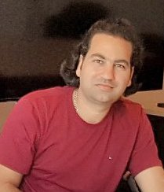

Directeur des études et Président de Jury Licence 3 Informatique
Laboratoire d'Informatique Signal et Image de la Côte d'Opale (LISIC) - UR 4491
Université du Littoral Côte d'Opale (ULCO)
Département Informatique et Signal
Université du Littoral Côte d'Opale
Adresse : 50, rue Ferdinand Buisson BP 719
62228 Calais Cedex France
Welcome to my academic website. I am a Maître de Conférences (Associate Professor) in Computer Science at the Université du Littoral Côte d'Opale (ULCO), affiliated with the Laboratoire d'Informatique Signal et Image de la Côte d'Opale (LISIC).
My research focuses on Explainable Artificial Intelligence (XAI), knowledge management, and semantic annotation systems. I am actively involved in teaching and academic administration, serving as the Director of Studies and President of the Jury for the third year of the Computer Science Bachelor's program.
I primarily conduct my teaching activities in the Computer Science and Signal Department at ULCO, as well as at EILCO (École d'Ingénieurs du Littoral-Côte-d'Opale) and in various other components such as STAPS, SV, and DEUST on the Calais campus. I also provide services on the Longuenesse campus and in Boulogne-sur-Mer.
My teaching covers various computer science disciplines including Databases, Web Application Design and Development, Object-Oriented Programming, Digital Skills, and E-services. I teach at both bachelor's and master's levels, serving as a module coordinator for database courses across all three years of the computer science bachelor's degree, as well as in the Master Web and Data Science (WeDSci) and Master in Complex Systems Engineering (MISC) programs.
I employ innovative teaching methodologies using interactive tools such as Moodle, Wooclap, Kahoot, and custom scripts to manage large groups, promote interactivity, and provide automated feedback. I also lead introductory digital tools training for first-year students, reaching approximately 300 students annually.
My research work focuses on developing mechanisms for semantic annotation and semantic orchestration applied to software evolution and Artificial Intelligence systems. I am a member of the SysReIC research group at LISIC, which focuses on integrating knowledge management into AI solution development processes.
Currently, my work is dedicated to the explainability of reasoning processes in Artificial Intelligence systems, particularly in the context of Explainable AI (XAI). This research aims to develop methods and tools to improve the transparency and interpretability of AI systems, especially deep neural networks, by leveraging knowledge management approaches, ontologies, and knowledge graphs.
My research addresses the challenge of making AI systems more comprehensible for domain experts (such as doctors, engineers, etc.) by producing explanations at appropriate semantic abstraction levels that align with their knowledge and expertise.
My research has been published in various conferences and journals. I maintain an up-to-date list of all my publications on my ORCID profile.
ORCID Profile | View research projects and theses → | View all publications →